编译原理-属性文法和语法制导翻译
属性文法和语法制导翻译1
属性文法
- 属性文法,也称属性翻译文法
- Knuth在1968年提出
- 以上下文无关文法为基础
- 为每个文法符号（终结符或非终结符）配备若干相 关的“值”（称为
属性），代表与文法符号相关信 息，如类型、值、代码序列、符号表内容等 - 对于文法的每个产生式都配备了一组属性的
语义规则，对属性进行计算和传递 - 文法的属性分为
综合属性和继承属性
- 为每个文法符号（终结符或非终结符）配备若干相 关的“值”（称为
14.1.1 综合属性
- 自下而上传递信息
- 语法规则：根据右 部候选式中的符号的属性计算左部被定义符号的
综合属性 - 语法树：根据子结点的属性和父结点自身的属性计算父节点的
综合属性
如这样一个文法的，.val就是一个综合属性：每一个节点的综合属性val的值都由其一些子节点的值组成
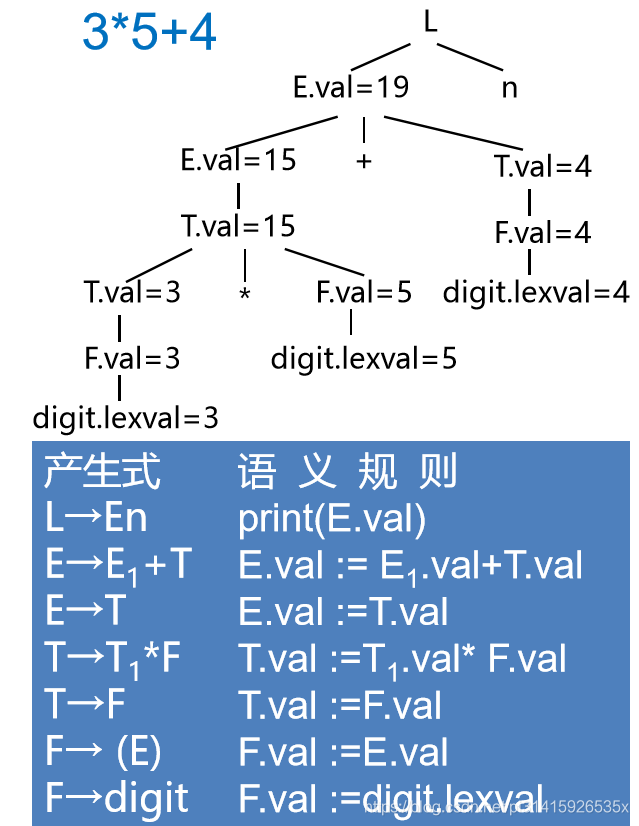继承属性
- 自上而下传递信息
- 语法规则：根据右部候选式中的符号的属性和左部被定义符号的属性计算右部候选式中的符号的
继承属性 - 语法树：根据父结点和兄弟节点的属性计算子结点的
继承属性
如下面的文法的type属性，对于id的type的值是由其父节点继承而来的，这样描述了一个声明语句：
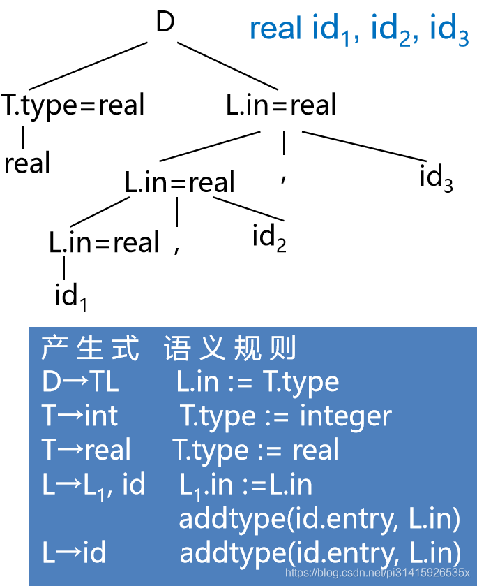14.1.3 属性依赖
-
对应于每个产生式 A → α，都有一套与之相关联的语义规则，每条规则的形式为（f 是一个函数）：
b := f ( c_1, c_2, … , c_k )
-
属性 b 依赖于属性 c_1, c_2, … , c_k
b是A的一个 综合属性 并且c_1, c_2, … , c_k是产生式右边文法符号的属性，或者b是产生式右边某个文法符号的一个 继承属性 并且c_1, c_2, … , c_k是A或产生式右边任何文法符号的属性
- 终结符只有
综合属性，由词法分析器提供 - 非终结符既可有
综合属性也可有继承属性，文 法开始符号的所有继承属性作为属性计算前的 初始值
语义规则
- 对出现在
产生式右边的继承属性和出现在产生式左边的综合属性都必须提供一个计算规则。 属性计算规则中只能使用相应产生式中的文法符号的属性。 - 出现在
产生式左边的继承属性和出现在产生式右边的综合属性不由所给的产生式的属性计 算规则进行计算，由其它产生式的属性规则计算或者由属性计算器的参数提供。 - 语义规则所描述的工作可以包括属性计算、静态语义检查、符号表操作、代码生成等。
测试：
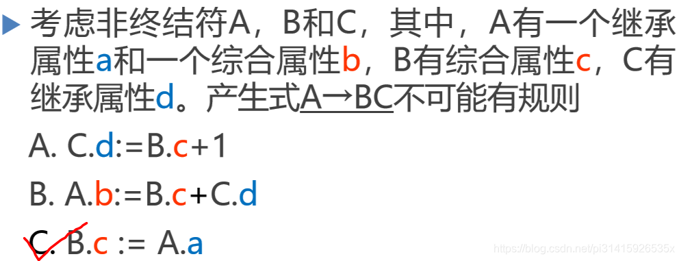带注释的语法树
- 在语法树中，一个结点的
综合属性的值由其子结点和它本身的属性值确定 - 使用自底向上的方法在每一个结点处使用语义规则计算综合属性的值
- 仅使用综合属性的属性文法称S－属性文法
如：
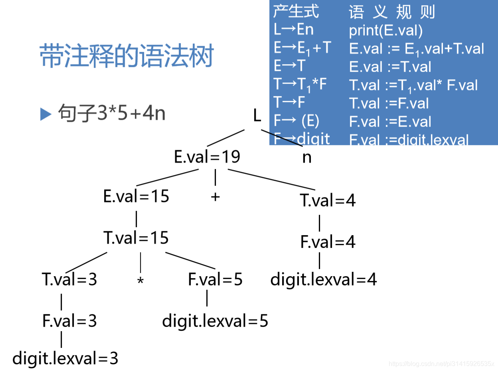- 在语法树中，一个结点的
继承属性由其父结点、 其兄弟结点和其本身的某些属性确定 - 用
继承属性来表示程序设计语言结构中的上下 文依赖关系很方便
如
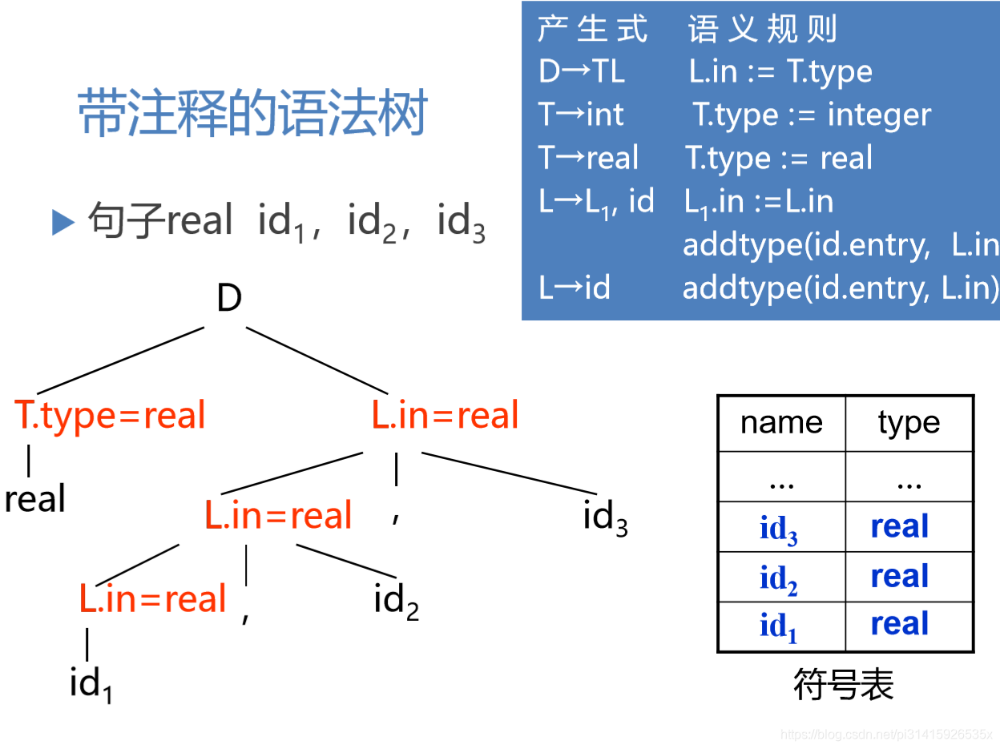属性计算
基于属性文法的处理方法
-
语义规则的计算：1、产生代码；2、在符号表中存放信息；3、给出错误信息；4、执行任何其它动作
-
对输入串的
翻译就是根据语义规则进行计算 -
由源程序的语法结构所驱动的处理办法就是
语法制导翻译法- 输 入 串 → 语 法 树 → 按 照 语 义 规 则 计 算 属 性
-
依赖图 、树遍历 、一遍扫描
依赖图()
- 在一棵语法树中的结点的继承属性和综合属性 之间的相互依赖关系可以由依赖图(有向图)来描述。
- 为每一个包含过程调用的语义规则引入一个
虚综合属性b，这样把每一个语义规则都写成 b : = f ( c 1 , c 2 , … , c k )的形式。 - 依赖图中为每一个属性设置一个结点，如果属 性b依赖于属性c，则从属性c的结点有一条有向 边连到属性b的结点。
- 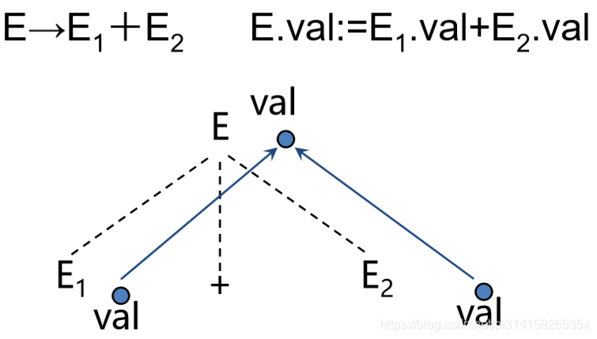
依赖图的构建算法
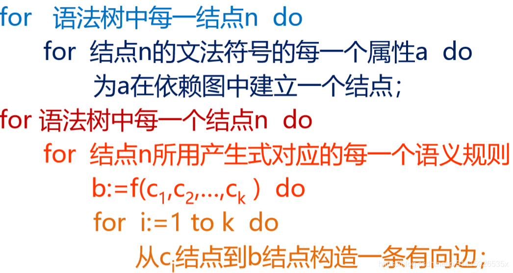依赖图示例
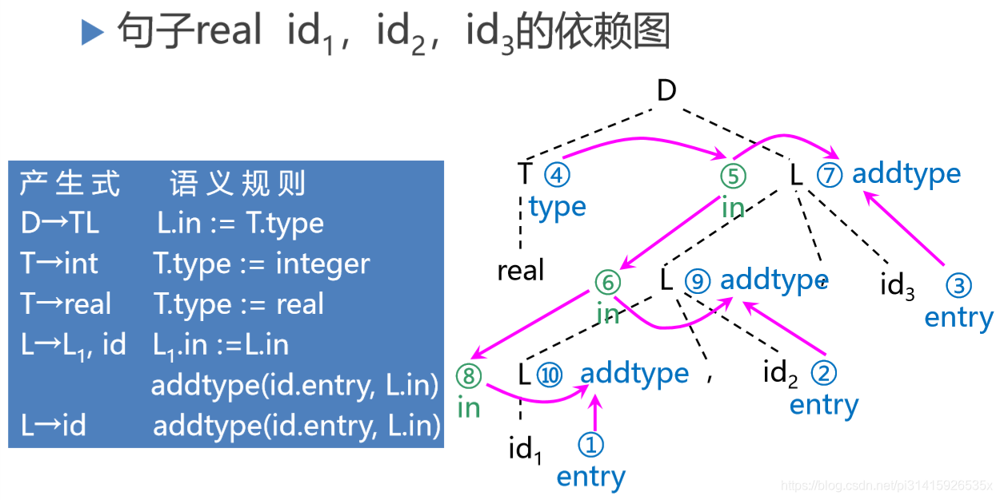良定义的属性文法
- 如果一属性文法不存在属性之间的循环依赖关系，则称该文法为良定义的
- 一个依赖图的任何拓扑排序都给出一个语法树中结点的语义规则计算的有效顺序
属性的计算次序
-
基础文法用于建立输入符号串的语法分析树
-
根据语义规则建立依赖图
-
根据依赖图的拓扑排序，得到计算语义规则的顺序
- 输 入 串 → 语 法 树 → 依 赖 图 → 语 义 规 则 计 算 次 序
树遍历()
树遍历的属性计算方法
通过树遍历的方法计算属性的值:
- 假设语法树已建立，且树中已带有开始符号的继承 属性和终结符的综合属性
- 以某种次序遍历语法树，直至计算出所有属性
- 深度优先，从左到右的遍历:
- 输 入 串 → 语 法 树 → 遍 历 语 法 树 计 算 属 性
树遍历算法
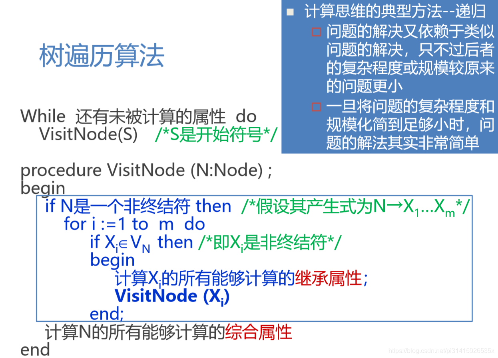树遍历算法示例
考虑属性的文法G(S)，其中:
- S有继承属性a，综合属性b
- X有继承属性c、综合属性d
- Y有继承属性e、综合属性f
- Z有继承属性h、综合属性g
树遍历示例
不断的用上一规则，检查每一个节点是否有为计算的属性：
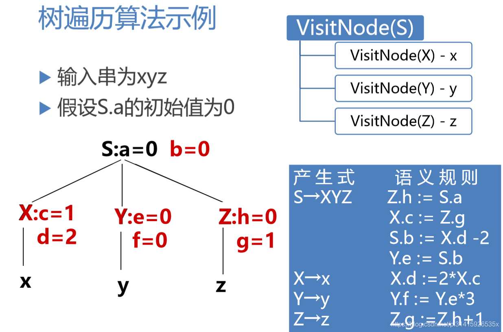一遍扫描
一遍扫描的处理方法
- 在语法分析的同时计算属性值 ：所采用的语法分析方法 会影响 属性的计算次序
- 所谓
语法制导翻译法，直观上说就是为文法中每个 产生式配上一组语义规则，并且在语法分析的同时 执行这些语义规则 - 语义规则被计算的时机
- 自上而下分析，一个产生式匹配输入串成功时
- 自下而上分析，一个产生式被用于进行归约时
抽象语法树
抽象语法树(Abstract Syntax Tree，AST) ，在 语法树中去掉那些对翻译不必要的信息，从而 获得更有效的源程序中间表示
建立表达式的抽象语法树
mknode(op,left,right)建立一个运算符号结点，标号是op，两个域left和right分别指向左子树和右子树mkleaf(id,entry)建立一个标识符结点，标号为id，一个域entry指向标识符在符号表中的入口mkleaf(num,val)建立一个数结点，标号为 num，一个域val用于存放数的值
建立抽象语法树的语义规则
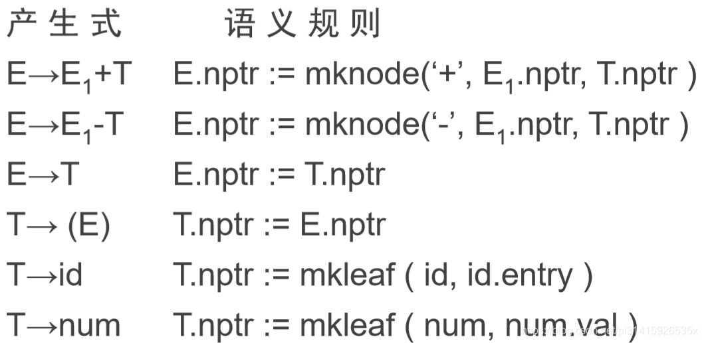 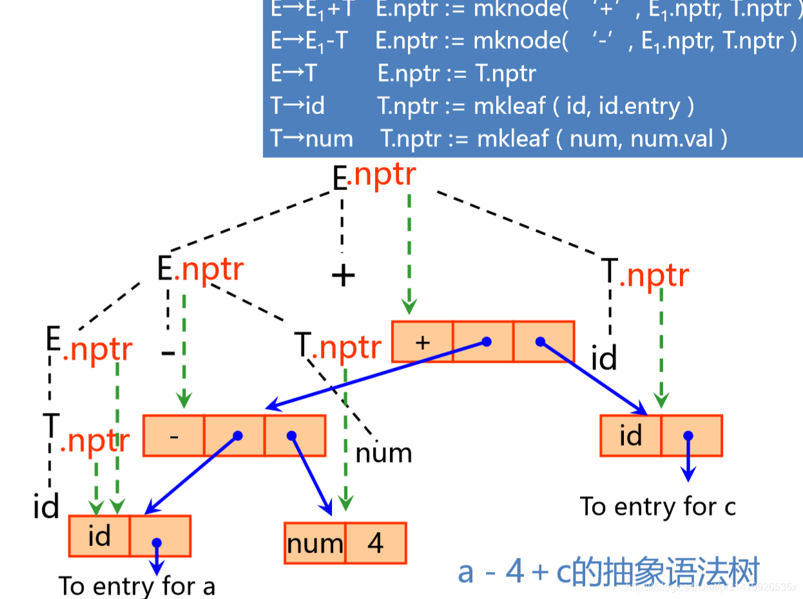属性文法和语法制导翻译2
S-属性文法
S-属性文法的自下而上计算
-
S-属性文法：只含有综合属性 -
在自下而上的分析器分析输入符号串的同时计算
综合属性- 分析栈中保存语法符号和有关的综合属性值
- 每当进行归约时，新的语法符号的属性值就由栈中正在归约的产生式右边符号的属性值来计算
-
在分析栈中增加附加域存放综合属性值
-
假设产生式
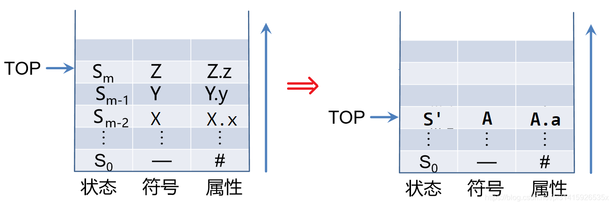A → XYZ对应的语义规则为a := f (X.x, Y.y, Z.z)。分析栈的变化：
一个例子：
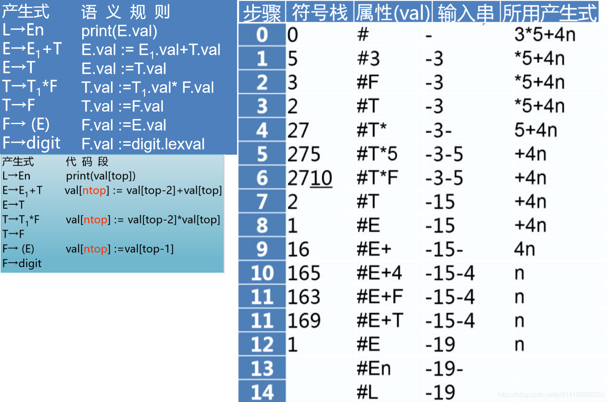L-属性文法
一遍扫描的处理方法
- S－属性文法适合一遍扫描的自下而上分析
- L－属性文法适合一遍扫描的自上而下分析
L-属性文法和自顶向下翻译
- 按照深度优先遍历语法树，计算所有属性值
- 与LL(1) 自上而下分析方法结合
- 深度优先建立语法树
- 按照语义规则计算属性
15.2.3 L-属性文法
一个属性文法称为 L-属性文法 ，如果对于每个产生式 A → X 1 X 2 … X n，其每个语义规则中的每个属性或者是 综合属性 ，或者是 X i ( 1 ≤ i ≤ n ) 的一个 继承属性 且这个继承属性仅依赖于：
- 产生式中 X i 左边符号 X 1 ， X 2 ， … ， X i − 1 的属性
- A的继承属性
S-属性文法一定是L-属性文法
例如这样一个文法就不是L-属性文法：
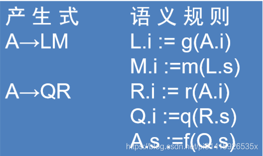翻译模式
翻译模式
-
语义规则：给出了属性计算的定义，没有属性计算的次序等实现细节 -
翻译模式：给出使用语义规则进行计算的次序，把实现细节表示出来 -
在翻译模式中，和文法符号相关的属性和语义规则（也称
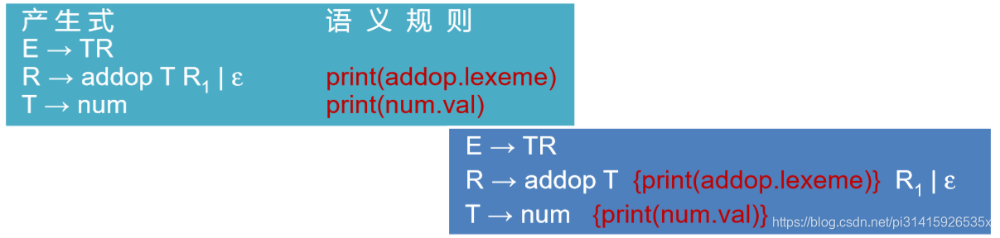语义动作），用花括号{ }括起来，插入到产生式右部的合适位置上
翻译模式示例
如把带加号和减号的中缀表达式翻译成相应的后缀表达式，对输入串使用上面的文法的处理：9-5+2
分析如下：
设计翻译模式的原则
- 设计翻译模式时，必须保证当某个动作引用一个属性时它必须是有定义的
L-属性文法本身就能确保每个动作不会引用尚未计算出来的属性
建立翻译模式
- 当只需要
综合属性时：为每一个语义规则建立 一个包含赋值的动作，并把这个动作放在相应的产生式右边的末尾 - 如果既有
综合属性又有继承属性，在建立翻译模式时就必须保证：- 1.产生式右边的符号的继承属性必须在这个符号以前的动作中计算出来
- 2.一个动作不能引用这个动作右边的符号的综合属性
- 3.产生式左边非终结符的
综合属性只有在它所引用的所有属性都计算出来以后才能计算。计算这种属性的动作通常可放在产生式右端的末尾

(更多在CSDN pi31415926535x)
参考
- 学习所用，转自CSDN pi31415926535x
- 《高级程序设计语言编译原理》
(end)